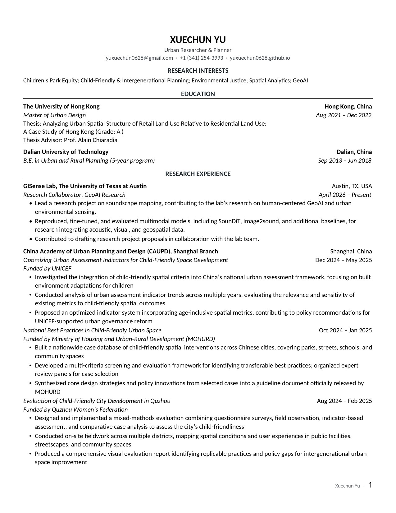

Skip to content
Xuechun Yu
Home
Research
Practice
News
CV
Contact
CURRICULUM VITAE
CV
Updated October 14, 2026 · 2 pages
Download PDF ↓
‹
1 / 2
›
View
Fit width
125%
150%
Xuechun Yu / CV

Open PDF in a new tab ↗
Read the complete CV (PDF)